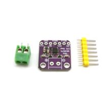

Модуль усилителя класса D MAX98357 I2S
audioЭто модуль аудиоусилителя класса D на микросхеме MAX98357A/B с I2S-входом. Используется для прямого подключения цифрового аудиосигнала от микроконтроллера или SBC к динамику без отдельного ЦАП.
MAX98357 — это монофонический цифровой усилитель класса D для аудио по интерфейсу I2S/PCM, часто встречается на готовых breakout-модулях. Он принимает только цифровой аудиопоток по линиям BCLK, LRCLK и DIN и уже сам усиливает сигнал для динамика. Устройство рассчитано на питание 2.5–5.5 В и имеет встроенные режимы shutdown/standby, а также выбор канала/режима через управляющие входы. Выход выполнен мостовым включением OUTP/OUTN, что позволяет подключать динамик напрямую без выходного фильтра в типовых приложениях. Такой модуль обычно применяют с ESP32, Raspberry Pi, Arduino-совместимыми платами и другими системами с I2S-выходом.